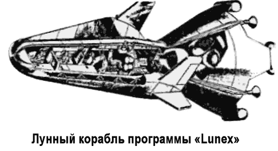
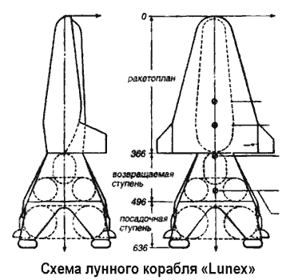

Программа «Lunex»
Серьезной альтернативой программе «Аполлон» могла стать секретная программа высадки на Луну, подготовленная командованием ВВС США и известная ныне под названием «Лунэкс» («Lunex» — от «Lunar Expedition»). Эта программа была представлена на рассмотрение президента в мае 1961 года, однако не получила должного развития, оставшись на бумаге.

В первом же разделе докладной записки, подготовленной для президента, называлась главная цель программы «Лунэкс» — пилотируемая экспедиция на Луну до конца 1967 года и высадка астронавта на ее поверхность как демонстрация технического превосходства США над СССР.
Далее в докладе приводится довольно подробный план осуществления этого смелого замысла; причем всячески подчеркивается, что программа «Лунэкс» зиждется не на пустом месте, а на огромном опыте, полученном учеными и конструкторами ВВС при разработке космических систем.
Программа «Лунэкс» предусматривала два равноправных варианта схемы полета на Луну. Выбор между этими схемами командование ВВС собиралось сделать позднее.
Первый вариант (рекомендуемый) подразумевал схему «прямого выстрела», когда космический корабль доставлялся на Луну, стартуя непосредственно с поверхности Земли при помощи мощной трехступенчатой ракеты-носителя.
Второй вариант (обсуждаемый) предусматривал поэтапную сборку космического корабля на околоземной орбите с последующим стартом к Луне. Схему «прямого» выстрела командование ВВС считало более перспективной, хотя и более дорогой.
Сам космический корабль для полета на Луну должен был состоять из трех элементов: лунного посадочного модуля лунного стартового модуля и разгонного транспортного средства. На первый взгляд это напоминает конструкцию, сходную с той, которая была придумана Кондратюком и впоследствии выбрана для «Аполлона». Однако имеется принципиальная разница. Посадочный модуль программы «Лунэкс» — это ракетоплан, способный осуществлять самостоятельный сход с орбиты, планирование в атмосфере Земли и посадку на аэродром обычного типа.
В докладе ВВС указывается, что для успешной реализации плана экспедиции на Луну необходимо разработать и довести до стадии летных образцов три типа космических аппаратов.
Первый тип — ракетоплан (планирующий летательный аппарат); конечный образец должен представлять собой транспортное средство, рассчитанное на трех пилотов, выдерживающий перегрузки при старте с Земли и Луны и при возвращении в атмосферу. Второй тип — лунный стартовый модуль, состоящий из двух ступеней; первая ступень должна обеспечивать мягкую посадку на поверхность Луны, вторая — взлет с нее. Третий тип — тяжелая ракета-носитель с ЖРД, работающими на жидком водороде и кислороде; первая (стартовая) ступень должна давать тягу не менее 2700 тонн.
Создание каждого такого аппарата — это отдельный проект, имеющий свой собственный график развития, хотя и увязанный с общей программой разработки.

Предполагаемые габариты пилотируемого лунного корабля (обитаемый посадочный модуль плюс лунный стартовый модуль): общая длина — 16,07 метра, диаметр — 7,62 метра, общий вес — 60,7 тонны, вес возвращаемого ракетоплана — 9,2 тонны. Система жизнеобеспечения рассчитывалась на 10 дней: 2,5 дня — на полет туда, 5 дней — на поверхности Луны, 2,5 дня — на полет обратно. Для изучения воздействия космической среды на земные организмы в ходе длительного рейса предполагалось отправить астронавташимпанзе в 15-дневный орбитальный полет (проект «BOSS»).
Программой предусматривалась разработка системы спасения экипажа, способной обеспечить благополучное возвращение астронавтов на Землю, даже если авария произойдет на самом уязвимом участке полета — при мягкой посадке на Луну. Для этого двигатели лунного стартового модуля имели возможность многократного запуска, а кроме того, планировалось сбросить на поверхность Луны вблизи от места высадки экспедиции дубликат лунного корабля.
Помимо проектирования и летно-конструкторских испытаний элементов лунного корабля, для реализации программы требовались подробные сведения о Луне. Эту часть задачи военно-воздушные силы предлагали доверить НАСА.
Аэрокосмическое агентство должно было провести детали ное картографирование Луны, изучить характеристики ее поверхности с помощью автоматических станций типа «Сервейор», а также доставить на Землю образцы грунта.
Доставку станций на Луну планировалось реализовать с использованием тех же средств, которые позднее будут применены при осуществлении пилотируемой экспедиции, это позволило бы проверить работоспособность узлов и агрегатов лунного корабля в натурных условиях.
В случае утверждения программы «Лунэкс» командование ВВС обещало осуществить первый пилотируемый запуск лунного корабля на орбиту высотой 80500 километров не позднее апреля 1965 года, облет Луны астронавтами — не позднее сентября 1966 года, высадку на Луну — не позднее августа 1967 года, развертывание лунной экспедиционной базы — не позднее января 1968 года. Созданную в ходе работ по программе космическую систему можно будет совершенствовать в дальнейшем с целью организации экспедиций на Марс и Венеру. Кроме того, для поддержания экспедиционной базы потребуется создать межорбитальные буксиры, способные доставить на лунную поверхность грузы массой порядка 20 тонн. Эти «буксиры» командование ВВС собиралось использовать в рамках военной программы развертывания спутниковой группировки.
Вообще же, в докладной записке по «Лунэкс» постоянно упоминается, что программа имеет не только политическое, но и военное значение. Поэтому предлагалось сформировать специальное военизированное подразделение в количестве 6000 человек, которые будут непосредственно заниматься подготовкой экспедиции. Кроме того, к проекту требовалось подключить еще около 60 тысяч специалистов, работающих на контрактной основе, которые должны были заниматься конструированием и постройкой перспективной ракеты-носителя, проходившей под обозначением «ВС 2720».
Согласно расчетам затраты на реализацию всего объема программы «Лунэкс» в период с 1962 по 1971 год должны были составить 7,5 миллиарда долларов.
Трудно сейчас сказать, почему президент Джон Кеннеди отклонил программу «Лунэкс». Может быть, потому, что она показалось ему недостаточно проработанной: ведь ВВС только обещали создать мощную ракету-носитель, способную доставить пилотируемый корабль на Луну, а Вернер фон Браун, перешедший в НАСА, уже вовсю трудился над ракетами класса «Сатурн». А может быть, подобно своему предшественнику, американский президент просто не захотел отдавать космическую программу в руки одного военного ведомства, что неизбежно вызвало бы протесты как со стороны руководства НАСА, так и со стороны «заклятых друзей» из армии и ВМФ.